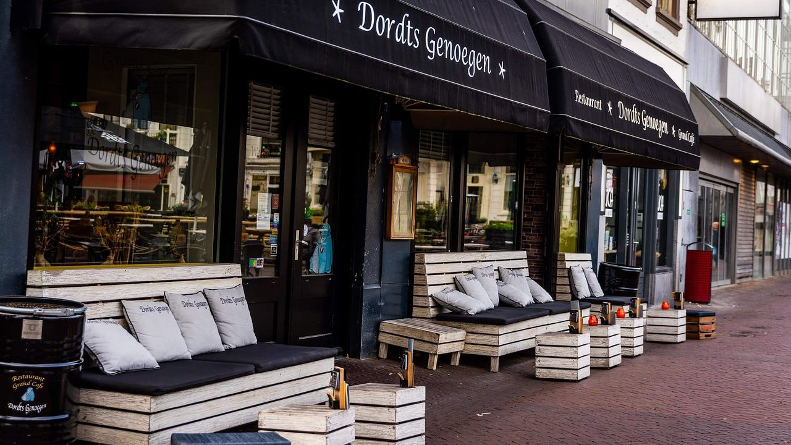

Na afspraak met mijn moeder (als ik mijn diploma haalde mag ik werk zoeken) had ik mijn eerste baantje, in de horeca.
Ik werk nu 1 dag in de week bij Dordts Genoegen, ik vind het wel leuk.
Je hebt verschillende diensten daar, de ochtenddienst, de middagdienst en de sluitdienst.
Ik begon eerst met middagdienst maar werd dat steeds laat in de avond, je begint dan om 12u en eindigt meestal rond 21/22u.
Sinds een paar weken terug draai ik nu ochtenddiensten omdat dat het makkelijkst is, je start om 8:30u en eindigt meestal rond 17u.
